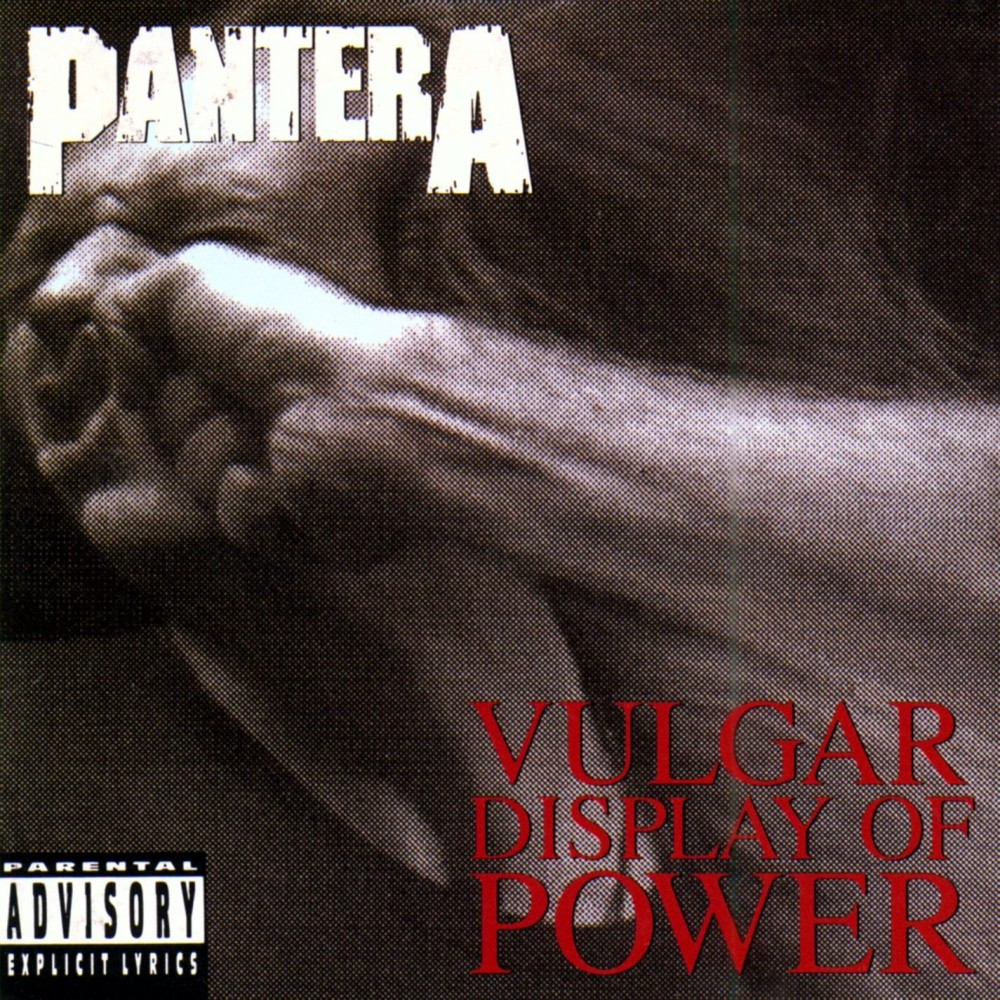

Far Beyond Driven (1994) è l'album che ha portato i Pantera ai vertici del metal moderno; all'uscita debuttò alla posizione #1 della Billboard 200, consolidando la band come punto di riferimento del decennio.

Un disco diretto e aggressivo, celebre per brani che sono diventati inni del metal moderno; la combinazione di groove e riff pesanti lo rende una pietra miliare nella discografia della band.
| # | Titolo | Durata |
|---|---|---|
| 1 | Mouth for War | 3:49 |
| 2 | A New Level | 3:22 |
| 3 | Walk | 5:15 |
| 4 | F*****g Hostile | 3:41 |
| 5 | This Love | 5:15 |
| 6 | Rise | 2:40 |
| 7 | No Good (Attack the Radical) | 4:43 |
| 8 | Live in a Hole | 4:09 |
| 9 | Regular People (Conceit) | 2:01 |
| 10 | By Demons Be Driven | 5:07 |
| 11 | Hollow | 5:58 |
Formazione: Dimebag Darrell (chitarra), Rex Brown (basso), Vinnie Paul (batteria), Phil Anselmo (voce).